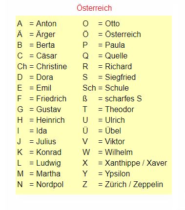

Buchstabiertafel
În limba germană, Buchstabiertafel este un tabel folosit pentru a ortografia numele proprii, adresele sau alte cuvinte la telefon sau în conversații oficiale.
Fiecare literă este asociată cu un cuvânt reprezentativ (de exemplu: A – Anton, B – Berta, C – Cäsar).
În Austria se folosesc uneori alte variante decât în Germania.

Exemplu
„Wie heißen Sie?” – „Ich heiße Mayer – M wie Martha, A wie Anton, Y wie Ypsilon, E wie Emil, R wie Richard.”